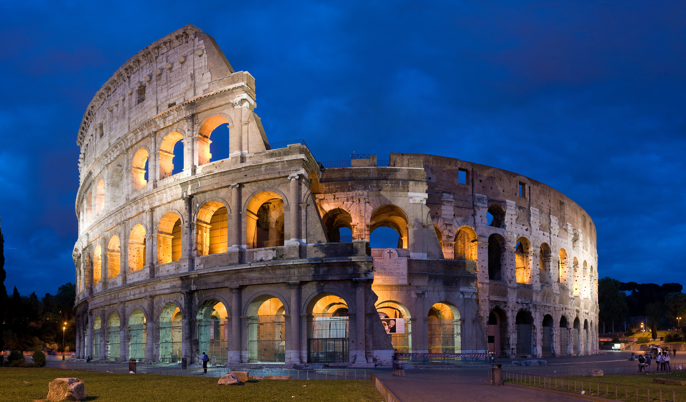
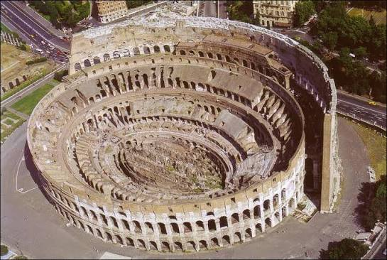

|
 |
IntroducciónEl Coliseo o Anfiteatro Flavio (en latín Colosseum, en italiano Colosseo) es un anfiteatro de la época del Imperio romano, construido en el siglo I. Está ubicado en el este del Foro Romano y fue el mayor de los que se construyeron en el Imperio romano. Conocido originalmente como Anfiteatro Flavio, Amphitheatrum Flavium, a partir de la Edad Media pasó a ser llamado Coliseo porque a su lado había una gran estatua dedicada al emperador Nerón, el Coloso de Nerón, «Colossus», que Adriano había transformado en una representación de Helios, el dios Sol. De este «Colossus Solis» derivó el nombre actual del edificio. La estatua llegó a desaparecer. |
Otros datos de interésEn la antigüedad poseía un aforo para unos 65 000 espectadores, con ochenta filas de gradas. Los que estaban cerca de la arena eran el Emperador, su familia y los senadores, y a medida que se ascendía se situaban los estratos inferiores de la sociedad. En el Coliseo tenían lugar luchas de gladiadores y espectáculos públicos. El Coliseo se usó durante casi cinco siglos, celebrándose en los últimos juegos de la historia en el siglo VI, bastante más tarde de la tradicional fecha de la caída del Imperio romano de Occidente en 476 d. C. |
 |